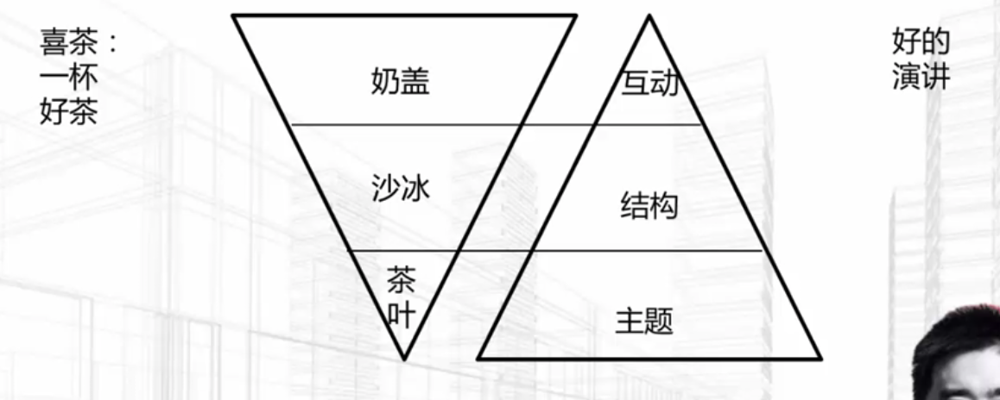

一、如何做一场让人想加你微信的自我介绍？
1.一定是有亮点，有故事的
2.自我介绍的5要素：关键数据+成就事件+可提供的价值+脆弱一面（可选）+成长事件（可选）
二、不紧张：消除演讲紧张的十二种方法
1.上台前
- 准备、准备、准备
- 试讲至少3遍
- 充分的睡眠
- 现场提前认识朋友（找托）
- 和亲戚打电话，聊聊接下来的演讲
- 对自己说，我是最棒的
2.上台后
- 把听众想成冬瓜
- 目光看稍远处，不直视观众，或者看那些对你微笑的观众
- 双手叉腰，2分钟
- 紧张的时候喝口水，用这个时间想词
- 运用咳嗽来放松
- 带一个熟悉的道具，增加安全感
三、先开口：演讲新手学武器的4个技巧
1.看到积极表达的好处：能说会道的人，统治了这个世界
2.营造一个安全的环境来练习演讲
- 1）为自己找到一个学习的榜样，跟着念讲稿
- 2）如果害怕面向公众，你可以在洗澡的时候大声朗诵
- 3）找到学习共同体，找到一群和你一样想要练习演讲的人，一起尝试开口演讲
3.降低难度，创造开口演讲的机会
- 只要开口，最难的事情已经完成了一半
- 念稿讲话->脱稿讲话
- 面向2人->面向100人
- 引用金句->创造金句
- 开口演讲这件事的门槛可以低到，你垫个脚就可以踫到的程度
4.在不同场景下武器演讲，学以致用
- “隐性知识显性化，强调的就是运用知识解决实际问题”
四、找差距：那些让我们印象深刻的演讲
1.好的演讲
- 扎克伯格 哈佛毕业演讲
- 马云贵阳 演讲
- 习大大 2017元旦致辞

2.好演讲
- 愿意听->有趣+结构
- 记得住->故事+金句
- 能传播：共鸣
五、清单：演讲菜鸟的十大误区
1.缺少演讲机会：从和工作无关、风险比较小的场合开始，每个城市都有一些当地的读书会、文化沙龙，好好准备一下，争取发言和分享的机会
2.回避演讲机会
3.认为听众是老虎：其实大多数听众还是希望你能分享一些有用的东西；最坏的情况下，你也没有什么损失
4.演讲不做准备，瞎“开车”：哪怕你是再有经验的老司机。只要你没有为这次分享做准备，那些有经验的听众一定能辨别的出来
5.内容缺乏逻辑：其实你用一个最简单的结构总分总，都比你想到哪儿说到哪强；好的逻辑结构，可以帮助听众快速的抓住你的核心观点和论据，再来判断要不要听你的
6.台上念稿：听众会看出来你没有准备，也不熟悉内容；你不重视听众，听众怎么可能会愿意听你讲呢？
7.演讲语气过于平淡：刻意增加一些能够激发情感的内容；当你讲述自己最感兴趣的内容时，你能够找到那种激情四射的演讲感觉
8.舞台上乱跑：讲者是可以适度移动的，但是一般移动的幅度不宜过大，在一个半径1M的圈子里动会比较好
9.缺少和听众的眼光交流：多看看那些在面目和善的听众，从他们的目光中寻求肯定 ，同时，记得不时从左到右，从右到左的扫视听众，让每个人都知道你有在关注他们
10.自我中心，不关注用户反应：要通过故事让他们代入场景，用金句让他们思考，用段子让他们开心
六、浏览量最高的演讲是如何定主题的
1.新颖
2.有趣
3.与听众有关
4.起演讲标题的6个技巧：
- 1）提问式
- 2）标题中涵盖数字，数字有吸引人的魔力
- 3）熟悉概念陌生化，创造新概念
- 4）出现一些热门词“知识付费”、“社交电商 ”
- 5）提供标签，方便听众对号入座
- 6）收集一些好标题，套用它的结构
七、如何快速撰写一篇演讲稿
1.理解用户
- 1）想要赚谁的钱，就要和谁混在一起
- 2）知乎、行业社区，看用户评论
- 3）1v1访谈用户，“有意思的人系列采访”
2.演讲灵感
- 1）看你的用户抱怨什么？
- 2）看你的用户和朋友圈分享什么？
- 3）收集那些让你眼前一亮的创意
3.结构复用
- 1）如何3天盖出一间房
- 2）答案：用预制件
- 3）演讲套路+演讲内容模块就是你的“预制件”
4.想要更快，你有时需要先慢下来
八、干货型演讲必备的魔法公式
1.高中老师讲课
- 1）有研究方法，研究过程，研究结论
- 2）听众对于他的演讲提不起半点兴趣
- 3）听众不知道为什么听，也不知道听了之后这个东西对他们有什么用
2.毒鸡汤
- 1）告诉你他的起点有多卑微，现在有多NB
- 2）带你激情澎湃地跟着他一起鼓掌，一起跳舞
- 3）不讲过程，也不讲真实的难题，分享的方法没有可复制性
3.干货型演讲
- 1）激发改变意愿
- 2）用原因强化/给方案
- 3）分析问题-定义问题-解决问题
4.STORY公式
- Specifics，细节/数据
- Tips，小技巧
- Obstacle，障碍
- Rule，规律/原理
- Yeah，笑点
九、三种演讲主题的内容结构
1.Why-what-how（工作总结、培训）
- 为什么——边缘系统-情绪反应
- 怎么做——新皮层-认知、决策
- 是什么——脑核-行动、执行
2.重要发现（培训、公众演讲）
- 开场，有趣故事
- 阐述，展开你的论点
- 证据与故事，如何被实行，为什么被实行
- 结尾，你的idea将如何影响观众的生活
3.挑战常识（产品demo、公众演讲）
- S，描述场景
- Q，什么问题一直困扰大家
- A1，之前的看法
- R，反转，你发现的真正原因以及证据
- A2，解决之道
- P，观众参与方式
十、开场结尾的7种套路
1.演讲开场的三种方式
- 1）讲一个故事：NB的方案能把你代入一个特定场景，建立起“即视感”，引发用户积极联想
- 2）分析市场现状，万能，通用，安全
- 3）回顾用户抱怨 （需要回应用户的抱怨 ），调侃对手
2.演讲结尾的四种套路
- 1）金句结尾，便于记忆，顺口，简短，好记
- 2）响应开头，强调重点，U型结构，关键词重复
- 3）号召行动，建立与听众的链接，行动要简单易行
- 4）场景描述+点题句，意境升华，虚实结合，场景描写要细，点题句要大气
十一、用内容模块化，搞定即兴演讲
1.媒体采访=自我介绍+最成功的一件事+创业实心
2.演讲内容的模块化
- 针对一些常用的演讲主题，提前准备
- 十几个三分钟的演讲模块，多次练习并且优化
- 在需要即兴演讲的一些场合随时调用
3.面向所有人
- 1）自我介绍
- 2）创业/做事的实心
- 3）成长最快的一件事
- 4）最失败的一件事
- 5）印象最深的一句话
4.面向管理团队
- 1）你对领导力的看法（讲一个小故事+分析里面如何体现了领导力要素）
- 2）对于新晋管理者的三点建议（公司企业文化+人才提拔标准+期望与勉励）
- 3）最近在看的三本书（书名+推荐理由）
5.面向员工
- 1）你眼中的人才标准（员工的提问+你的标准+某个获得晋升的员工的故事）
- 2）对你影响最大的一个人（事件+影响你的时机）
- 3）给员工打气，年底勉励谈话（今年的困难+依旧取得了成绩+明年目标+明年奖励机制）
6.面向行业
- 1）对于行业趋势的看法（行业变化的+行业不变的）
- 2）如何看待竞争对手（我们自己的优势和不同之处+不提对手不好的占）
- 3）行业外对于本行业最大的误解（外行都认为我们是…+实际上我们是…）
- 4）对于行业新人，大学毕业生的寄语
十二、如何成为一个会讲故事的人？
1.主角：弱小的创业者故事容易打动读者
2.冲突
3.改变
4.对白
5.细节
6.数据
7.英雄之旅
- 平凡生活
- 激励事件
- 小试牛刀
- 更大挑战
- 失败
- 寻找导师
- 发现自我
- 打大BOSS
- 回家
8.故事与游戏的共同之处：限制+选择
十三、三个关键词，让你的演讲拥有画面感
1.演讲和方案要有画面感
2.动词，用行动把人物和东西串起来，让你知道事情先后发生的顺序
3.形容词，描述个人行动的感受，事情的分寸与变化
4.量词，让你在大脑中建立事物的轮廓
十五、演的三个阶段
1.PPT设计
2.互动技巧
- 1）讲规律：积极的身体语言和语调向听众传递积极的自信
3.气场外放
十六、PPT演示八点技巧
1.一页只讲一件事
2.视觉化
3.列表不要超过7点
4.高清图片：unsplash.com，pixabay.com
5.对齐
6.不要超过3种字体
7.配色：www.peise.net/tools/web/
8.每30s-1min一张PPT
十七、让听众不开小差的互动技巧
1.设计足够多的演讲互动
2.愿意听：提问、展示实物，时间上均匀分布
3.记得住：设置听众的拍照点，知识点回忆
4.能传播：视频，音乐等引发共鸣
5.象与骑象人：吸引注意力的逻辑
- 好奇心：有趣来吸引大象的注意力
- 故事：吸引大象注意力
- 奖励：有新颖性的、吸引力的
- 玩具
十八、如何培养自己的演讲气场
1.自信心需要滋养
2.自己擅长的领域
3.Why/初心
4.情绪胶囊
十九、做到这十点，你也可以把控演讲全场
1.早半个小时到活动或者授课现场，熟悉现场情况，也在听众中发发展盟友
2.让主持人介绍你的职业亮点，这个环节是必须的，绝对不能省略
3.开场互动，强调你和听众的共同点，接近与听众的距离
4.如果是课程，在课程开头让学员自己设定学习目标和学习规则
5.开场前记得设计破冰环节Ice break，让听众high起来
6.分成小组，鼓励小组竞争，积分形式进行奖励；奖品要足够新颖，有吸引力
7.一上午或者一下午的课程结束，记得带大家回顾收获
8.有些知识点的呈现，大胆的让演员通过演练来体验，效果可能超出你的意料
9.把控好演讲时间，一旦超时对内容压缩
10.演讲现场的秩序
二十、阻碍你成为高手的三座大山
1.熟手：严谨、有序、更改
2.演讲差点什么：缺少的，往往是对用户需求的洞察，特别是怎么样通过巧妙的运用套路，让听众产生信任感、启发感和画面感
3.高手：美丽、率性、危险
4.三座大山
- 1）不敢讲：怕丢脸
- 2）不会讲：固定思维
- 3）不会听：不关心听众
二十一、三种演讲的练习方法
1.模仿法
- 找一个对标的演讲画思维导图
- 也跟着念演讲稿，模仿语音语调
2.录音法

3.抽词法，把看到的三件事，用故事串在一起，提升日常演练和即兴演讲的能力
4.实战排练，提醒观众反馈重点
- 1）听不懂的地方（术语）
- 2）觉得逻辑跳跃的地方
- 3）觉得印象深刻的地方
二十二、教你几招，应对演讲中突发情况
1.设备故障：平常心、定位故障处理时间
2.听众开小差：切换内容，讲点有意思的，带听众动一动
3.有观众对演讲内容有异议：考虑是否回避争议、维持现场秩序、个别处理、不要现场撕
二十三、找到属于自己的演讲风格
1.在模仿的基础上发展自己的演讲风格
2.演讲熟手建议学学乔布斯
3.反复看一个演讲2-3遍：开头、结尾、故事、案例画一个思维导图出来
4.TED演讲风格：18分钟以内；简洁、有趣、让听众愿意了解更多
- 演讲要有广度
- 案例要有深度
5.老罗的幽默：行业梗，自嘲
- 自嘲的背后是自信
7.TED策展人Chris Anderson：“你的演讲不一定非要激情四射，博得雷鸣般的喝彩。如果你知道如何在饭桌上与朋友对话，那你就应该知道如何发布公众演讲”
二十四、演讲效果的4级评估工具
1.柯氏四级培训评估模式
二十五、如何做好一场30s的电梯演讲
1.只讲3点，结尾小结
2.套路：干啥+有啥好处+证据
3.100-120字，记得控制篇幅
二十六、如何做好一场年终总结演讲
1.根据场合需要+老板的耐心，准备三种长度的总结
- 1）1句话版本：关键事件+关键数据
- 2）3分钟版本：1分钟成绩+1分钟的打法+1分钟成长
- 3）15分钟版本：目标+成绩+困难+打法
二十七、搞定老板的演讲套路
1.通用套路
1）3M
Make strategy策略
Make team团队
Make number结果
2）FFA
Fact事实
Felling感受
Action行动
2.向不同性格老板汇报
1）DISC

2）“一般老板分两种：只要结果的，既要结果也要过程”，怎么判断：


二十八、搞定员工的演讲套路
1.一分钟经理人（适合日常项目进展过程中）
一分钟表扬
一分钟不足
一分钟目标
2.故事三板斧（更适合项目阶段性小结，气度总结）
忆苦思甜
设定标杆
重金奖励
二十九、如何用演讲赚到钱？